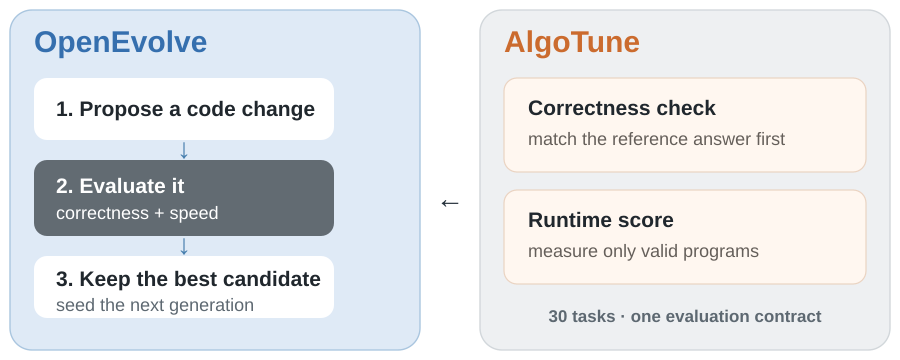
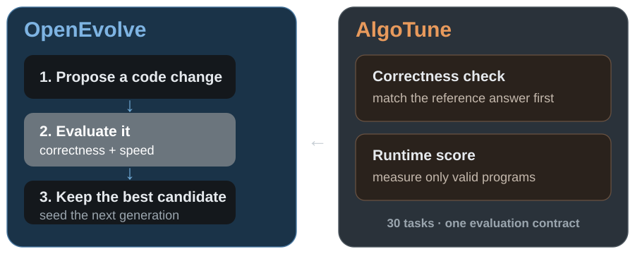
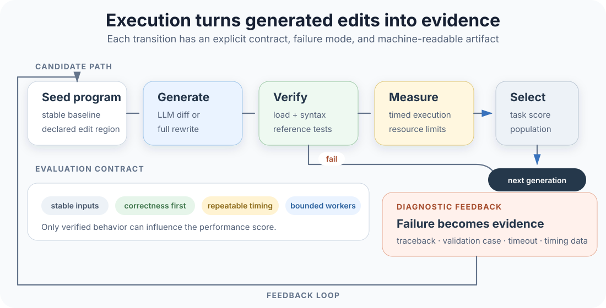
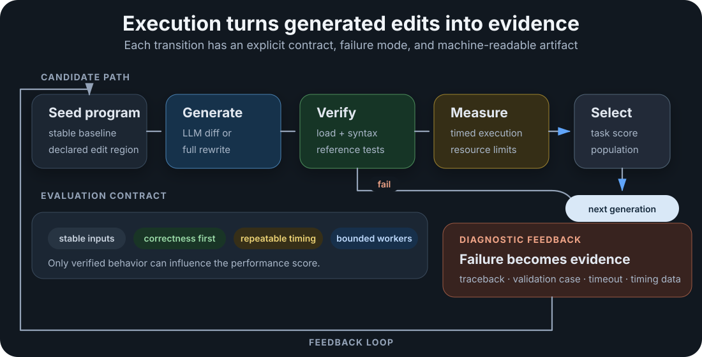
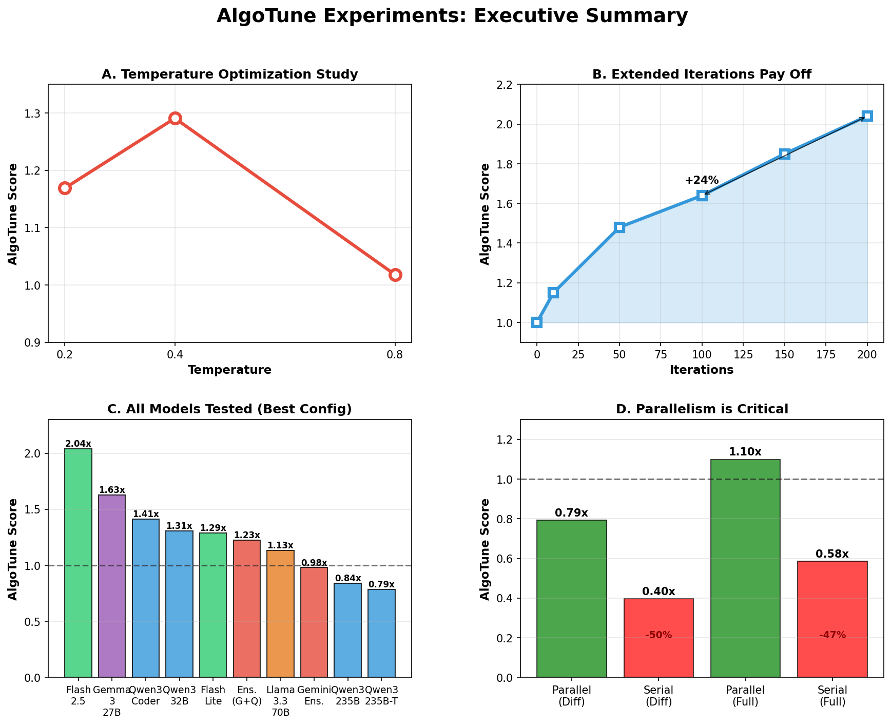
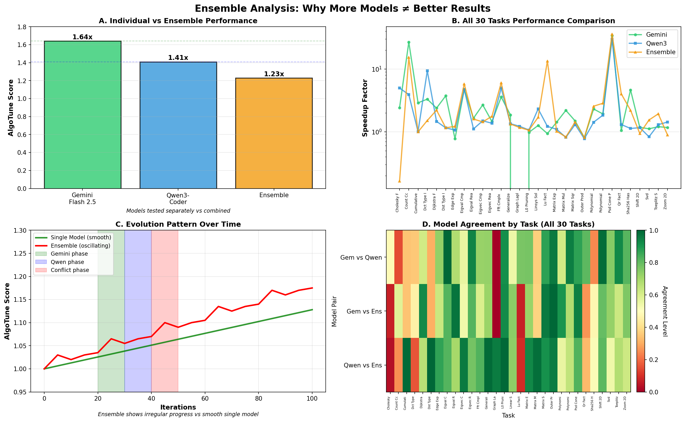

Project Write-Up
Building and Evaluating Evolutionary Coding Agents
TL;DR. I co-developed OpenEvolve, an evolutionary coding agent that uses language models to propose code changes and automated evaluators to select better programs. I prepared AlgoTune for use with OpenEvolve by building an adapter and evaluation workflow that turned 30 different optimization tasks into a consistent loop for generated-code execution, correctness verification, runtime measurement, and reproducible comparison. We then used that infrastructure to run 29 controlled experiments. I came away convinced that the verifier, execution environment, and feedback loop are core parts of a coding agent, not supporting infrastructure around it.
The Engineering Problem
Generating a plausible patch is easy, but establishing that it is correct, faster, reproducible, and safe enough to execute repeatedly is the real systems problem. OpenEvolve treats code improvement as evolutionary search: a language model proposes an edit, an evaluator executes the resulting program, and a population manager keeps useful candidates while preserving alternative strategies. That loop can improve an algorithm only when its fitness signal matches the behavior we care about, since a weak test rewards shortcuts, a noisy benchmark sends the search in the wrong direction, and a runner without resource boundaries lets one bad candidate stall an entire experiment.
My goal was to turn that abstract loop into a credible software-performance experiment, so we chose AlgoTune because its tasks pair reference implementations with correctness checks and timing measurements. The challenge was not simply to call the benchmark, but to make 30 heterogeneous tasks behave like one consistent environment for an agent that repeatedly writes and executes code.


Figure 1. The score only points the search in a useful direction when it is grounded in AlgoTune's reference implementations, correctness checks, and timing harness.
Preparing the Benchmark
I mapped each AlgoTune task onto the interface OpenEvolve expected. An adapter read a task’s implementation and description, extracted the code the model was allowed to change, and generated three artifacts, so every task exposed the same entry points despite ranging from graph algorithms to numerical linear algebra.
| Artifact | Built from | Purpose |
|---|---|---|
| Seed program | Task implementation + declared edit boundary | Starting point the agent evolves |
| Evaluator module | AlgoTune’s problem generator, reference implementation, correctness check | Scores each candidate program |
| Task configuration | Task metadata | Wires OpenEvolve to that task’s evaluator and budget |
Before a task entered the study, I checked that its generated files loaded correctly, that the candidate and reference implementation received the same inputs, and that timing only began after warmup and validation. I also moved the integration away from a bundled, machine-specific copy of AlgoTune: the adapter instead accepted an external checkout, discovered tasks from that repository, and generated the OpenEvolve files from a declared path. That small interface decision made updates and reruns much less fragile.
Once the pipeline was stable, we used it to design and run 29 configurations across 30 tasks, varying the axes below.
| Axis | What we varied |
|---|---|
| Model family | Multiple coding-model families |
| Edit strategy | Incremental diff vs. full rewrite |
| Temperature | Sampling temperature swept across a range |
| Execution feedback | Diagnostic artifacts present vs. removed |
| Iteration budget | 100 vs. 200 iterations |
| Ensemble behavior | Single model vs. alternating two models |
| Evaluation mode | Parallel (16 workers) vs. serial |
Building the Execution and Verification Harness
The harness turned open-ended code generation into a sequence of testable state transitions with explicit failure modes. Every proposed edit moved through the same path from loading and syntax checks to correctness tests, timed execution, and population selection.


I made the evaluator strict about ordering, validating a candidate before benchmarking it, since a program could otherwise appear fast by deleting work, exploiting an incomplete test, or failing before an expensive code path. This was a practical form of differential testing: the candidate ran on generated problems, and its output was checked against the task’s reference behavior before runtime affected its score. It was not formal verification, but it enforced a clear semantic contract at the boundary where generated code entered the system.
Executing model-generated code also forced me to think about containment and failure recovery, so worker processes and task-level timeouts kept crashes or nonterminating candidates from blocking the full run. The evaluator returned machine-readable metrics together with diagnostic artifacts such as tracebacks, validation failures, and timing data, and later prompts could use those artifacts as execution feedback, turning failed trials into evidence for the next edit.
I treated reproducibility as part of the interface. Each task needed a stable seed program, an explicit edit boundary, consistent resource limits, repeatable timing, and comparable aggregation. Because one unusually large speedup can dominate an arithmetic mean, we followed AlgoTune’s harmonic-mean aggregation across tasks. This evaluation contract let us compare agent settings instead of accidentally comparing different test conditions.
Debugging Agent Performance
When an agent underperforms, the model is only one suspect: the runner, verifier, feedback, search policy, and workload can each be the bottleneck. The most instructive failure came from serial evaluation, where independent task searches lost the concurrency that let them progress in parallel.
| Evaluation mode | Workers | Wall-clock | Aggregate score |
|---|---|---|---|
| Parallel | 16 | 1× | baseline |
| Serial | 1 | ~14× | 47–50% worse |
The gap was not only a throughput effect: long, difficult tasks accumulated timeouts under serial evaluation, received fewer useful iterations, and distorted the effective search budget, which taught me to treat concurrency as part of the experiment’s semantics whenever wall-clock limits, worker pools, and search budgets interact.
I used program inspection as a second layer of performance profiling:
| Task | What changed | Outcome |
|---|---|---|
| Connected components | Agent replaced depth-first search with a different algorithmic strategy | Large gains |
| Positive-semidefinite projection | Smaller numerical and allocation changes | Gains accumulated incrementally |
| SHA-256 | Python wrapper was not the limiting compute path | Barely moved |
Connected components is worth showing directly, since "a different algorithmic strategy" undersells what happened. The seed program called a library routine. The best evolved candidate replaced it with a hand-written union-find:
def solve(problem):
try:
n = problem.get("num_nodes", 0)
G = nx.Graph()
G.add_nodes_from(range(n))
G.add_edges_from(problem["edges"])
cc = nx.number_connected_components(G)
return {"number_connected_components": cc}
except Exception as e:
logging.error(f"Counting connected components failed: {e}")
return {"number_connected_components": -1}def solve(problem):
try:
edges = problem.get("edges", [])
n = problem.get("num_nodes", 0)
if n == 0:
return {"number_connected_components": 0}
if not edges:
return {"number_connected_components": n}
parent = list(range(n))
rank = [0] * n
def find(x):
root = x
while parent[root] != root:
root = parent[root]
while parent[x] != root: # path compression
parent[x], x = root, parent[x]
return root
def union(x, y):
root_x, root_y = find(x), find(y)
if root_x == root_y:
return False
if rank[root_x] < rank[root_y]: # union by rank
parent[root_x] = root_y
elif rank[root_x] > rank[root_y]:
parent[root_y] = root_x
else:
parent[root_y] = root_x
rank[root_x] += 1
return True
components = n
for u, v in edges:
if 0 <= u < n and 0 <= v < n:
if union(u, v):
components -= 1
return {"number_connected_components": components}
except Exception as e:
logging.error(f"Counting connected components failed: {e}")
return {"number_connected_components": -1}Figure 2. The seed and the best evolved program for count_connected_components, trimmed from the actual run. Nothing in the prompt or evaluator named union-find. The evaluator only scored correctness against the reference and wall-clock time.
That last case sharpened my accelerator-performance intuition at the system boundary. Before optimizing Python, tensor code, or a kernel caller, I now ask where execution time and data movement actually go, and whether the layer I can change has meaningful headroom.
What the Experiments Established

Figure 3. The study’s most useful result was not a single winning model, but a map of which system choices materially changed the search.
- Execution feedback mattered. Removing debugging artifacts reduced the aggregate score by 17% in the tested configuration: a scalar reward told the model whether it failed, while artifacts helped it reason about why.
- The edit interface depended on model capability. Strong coding models benefited from incremental diffs, while a weaker model performed better when allowed to rewrite the full target.
- More inference was useful when the loop remained productive. Extending the strongest run from 100 to 200 iterations improved its aggregate score from 1.64× to 2.04×.
- A naive ensemble was worse than either member. Alternating between two strong models caused incompatible strategies to overwrite one another, which motivated our later work on adaptive model routing.

Figure 4. The ensemble exposed a state-management problem: different models repeatedly replaced one another’s useful partial solutions instead of composing them.
What I Learned
- The verifier is part of the agent. Tests, measurements, timeouts, and aggregation determine which behaviors the search learns, so I now give evaluator design the same scrutiny as model selection.
- Correctness and performance need separate evidence. A candidate should first demonstrate semantic equivalence and only then earn a performance score, and keeping those checks separate made failures easier for me to diagnose.
- Generated code needs explicit execution boundaries. Process isolation, timeouts, and structured failure reporting kept bad candidates from poisoning an experiment, though a production service would need stronger operating-system or virtualization boundaries.
- Parallel systems change search behavior. Worker count affects more than wall-clock time when budgets, timeouts, and population updates interact.
- Profiles beat assumptions. The largest gains came from algorithmic changes or real bottleneck removal. Code at the wrong layer did not improve just because the model produced more of it.
- More models require coordination. Diversity helps only when the system preserves useful state and assigns models based on evidence. Indiscriminate alternation can destroy progress.
What carried forward was the systems practice behind these experiments: test-based verification, structured execution feedback, reproducible runners, concurrent evaluation, and bottleneck-aware profiling. In our follow-up work on EvolveBench, we improved on this by extending the same questions to real open-source repositories and adding adaptive routing, novelty filtering, and automated warmup.